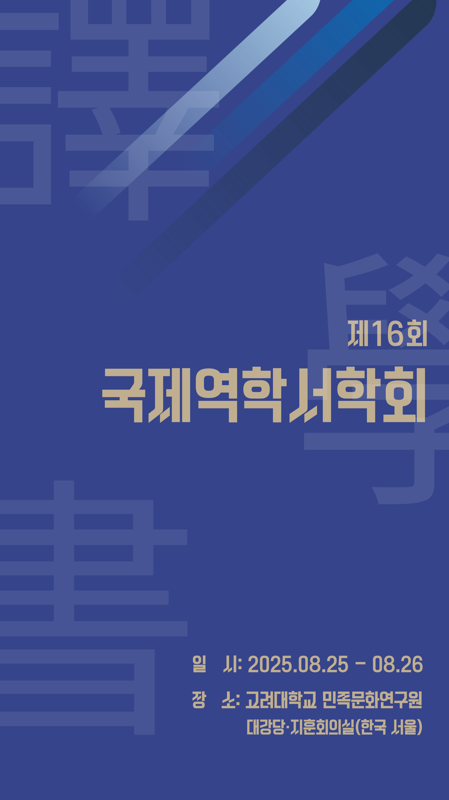

오시는 길 / Access
학술회의가 열리는 고려대학교 민족문화연구원에 오시는 길은 아래 링크를 참고하시기 바랍니다.
Please refer to the link below for directions to the Research Institute of Korean Studies at Korea University, where the conference will be held.
인천/김포국제공항에서 오시는 길
Directions from Incheon/Gimpo International Airport
외국에서 오시는 분들은 인천 또는 김포국제공항에서 지하철, 리무진버스 등을 이용하실 수 있습니다.
For international participants, you can use the subway or limousine bus from Incheon or Gimpo International Airport.
지하철 / Subway
인천 또는 김포국제공항(공항철도) -> 공덕역(6호선 환승) -> 고려대역 -> 3번 출구에서 성북20번 마을버스 탑승 -> '고려대 아이스링크' 정류장에서 하차
Incheon or Gimpo Int'l Airport (Airport Railroad) -> Gongdeok Station (Transfer to Line 6) -> Korea University Station -> Take Seongbuk 20 village bus from Exit 3 -> Get off at 'Korea University Ice Rink' stop
리무진버스 / Limousine Bus
6101번(김포국제공항 경유) 또는 6102번 -> '고려대역· 숭례초교' 정류장에서 하차
Take bus 6101 (via Gimpo Int'l Airport) or 6102 -> Get off at 'Korea University Station · Sungrye Elementary School' stop
일정 / Date
2025년 8월 25일(월) - 26일(화)
August 25 (Mon) and 26 (Tue), 2025
장소 / Venue
고려대학교 민족문화연구원
Research Institute of Korean Studies, Korea University
일정 / Date
2025년 8월 25일(월) - 26일(화)
August 25 (Mon) and 26 (Tue), 2025
장소 / Venue
고려대학교 민족문화연구원
Research Institute of Korean Studies, Korea University